[An annotated photo of me; an annotated photo of George Clooney, by Martin Schoeller.]
Face morphing begins with a manual annotation process. These photos have over a hundred pairs of matching points that mark each face's defining features.
[Triangulations of the two photos.]
We apply the "Delaunay triangulation" algorithm, which uses our chosen points to split each photo into triangles.

[The original photo of me; a "halfway" morph; the original photo of George Clooney.]
Computing a morph consists of two parts. First, we average the shapes of the two faces by taking a weighted average of their triangulations (with weight w for the first triangulation and weight 1-w for the second). Then, we fill each triangle in the averaged triangulation with the colors of the corresponding triangles in the original photos.
One pressing issue is that a triangle t_m in the averaged triangulation may not line up exactly with either of its corresponding triangles t_a, t_b in the original photos. We solve this issue with affine transformation. Given the three points of t_m and the three points of t_a, we compute an affine transformation matrix from t_m to t_a. Then, for each pixel in t_m, we use the matrix to find the corresponding location in t_a.
A computed location in t_a may have non-integer coordinates, so we use an interpolation function to sample the colors of its surrounding pixels. Then we add these colors to the corresponding pixel in t_m. By iterating over each triangle in the averaged triangulation and each pixel in a triangle, we compute the entire contribution of the first original photo to the morph. Separately, we compute the entire contribution of the second original photo. Combining their contributions with the appropriate weights produces the finished morph.

[The final morphing GIF.]
We can compute many morphs (in this case, 46 of them) with varying values of w. Displaying the morphs in sequence creates the appearance of a continuous morphing process.


[Three photos from the IMM Face Database; the average of thirty photos.]
We can generalize the morph computation to accomodate more than two original photos. Above is the result of averaging the faces of thirty Danish males from the IMM Face Database. Each photo is pre-annotated with 58 points, and each photo is given equal weight when computing the shape and color of the average face.
[The same three photos from the database, manipulated to have the same face shape.]
We can also separate the weights for averaging shapes from the weights for averaging colors. The morphs above average the face shapes of the thirty Danish males and use a single photo each for the coloring process.
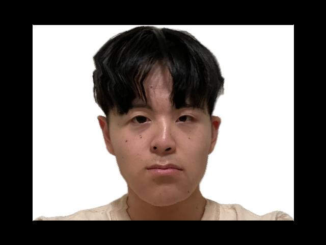 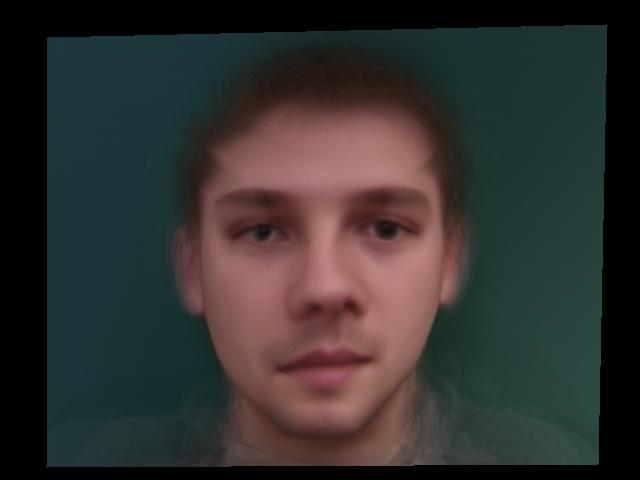 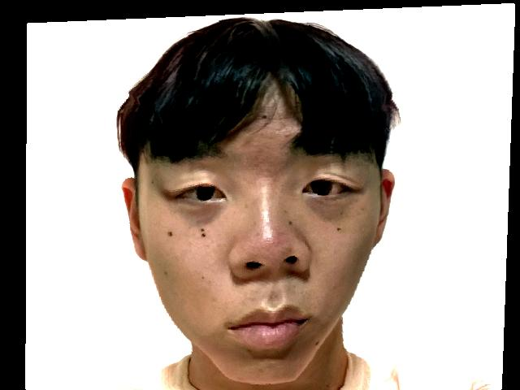[The average Danish male face shape with the colors of my photo; my face shape with the colors of the average Danish male face; my face exaggerated to contrast the shape and colors of the average Danish male face.]
I also combined my photo with the photos from the database. This required a second annotation of my face that matched the 58-point format of the Danish male faces.
In the morph computation for the third image above, the shape and colors of my face have a weight of 1.9, and the shapes and colors of the Danish male faces have a combined weight of -0.9. The Danish male faces contribute negatively, so in the resulting image I appear less like them than in my original photo.
The first Danish male with an increased contribution of the first principal component of face shapes; the second p.c.; the third p.c.
 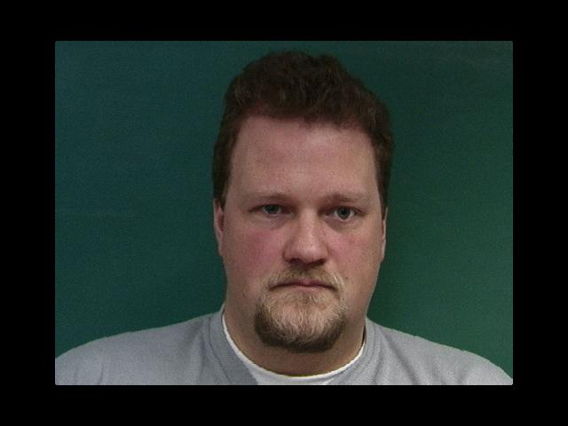
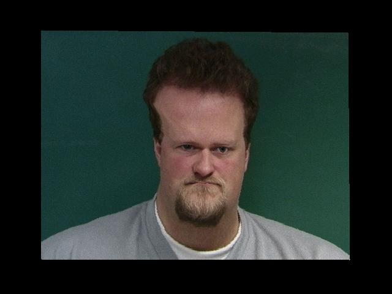
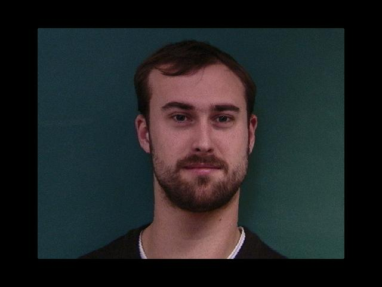
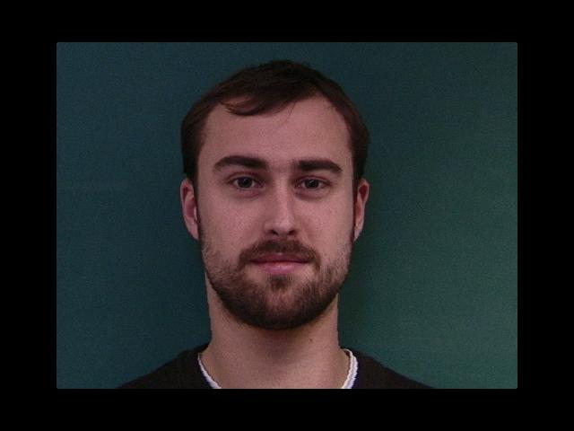
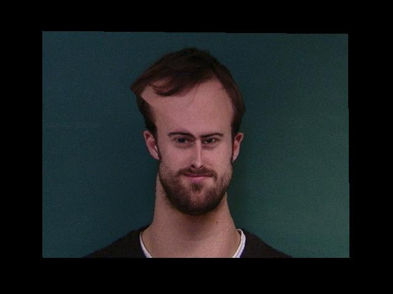
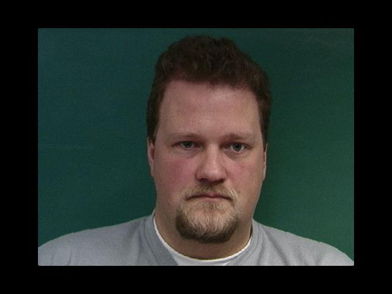
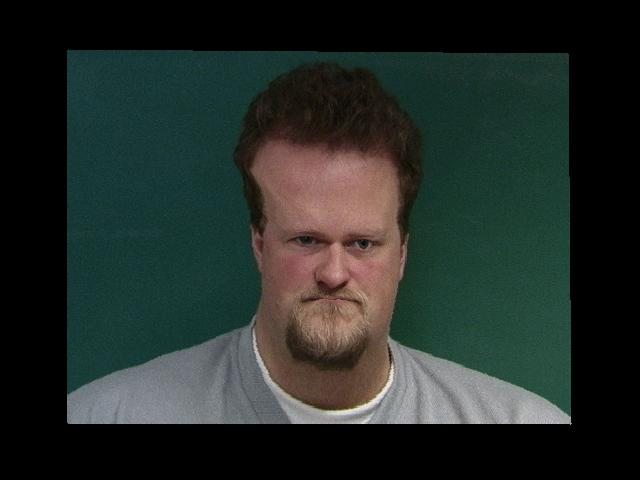
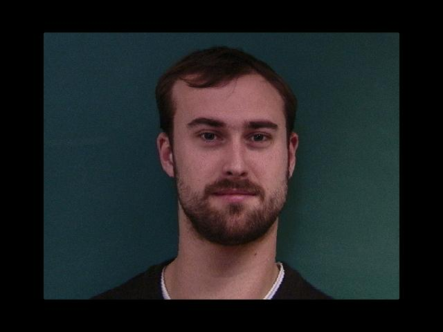
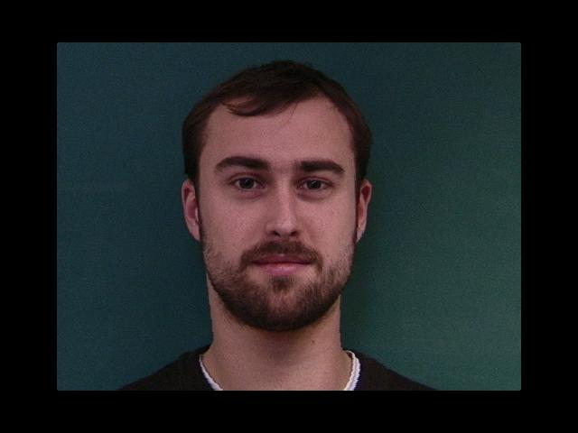
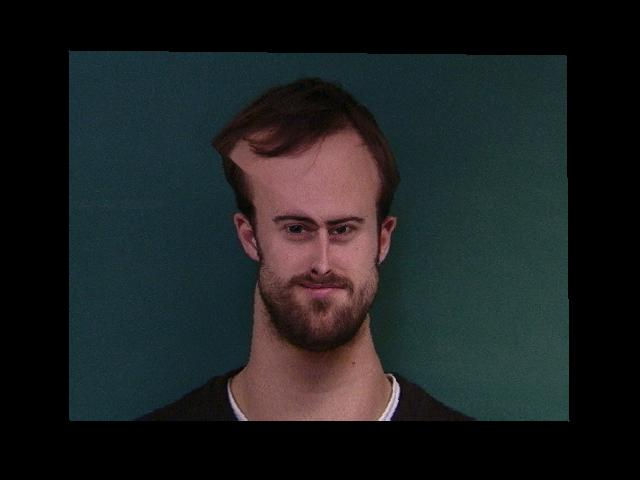
More results of increasing the contributions of particular principal components.
PCA calculates the "principal components" of a dataset. Each datapoint in a dataset is approximated by a linear combination of the most significant principal components of the dataset.
In this project, we use PCA to calculate the five most significant principal components of the set of Danish male face shapes. Each face shape is treated as a datapoint with 58*2=116 features.
We change an individual's face shape by increasing the contributions of certain principal components to the individual's face shape and proportionally decreasing the contributions of the other principal components. This produces a morph similar to some of the earlier morphs.
Because the computed principal components have no inherent meaning, it is hard to use them to produce a particular morphing effect. This is in contrast to earlier morphs, which had more direct explanations.